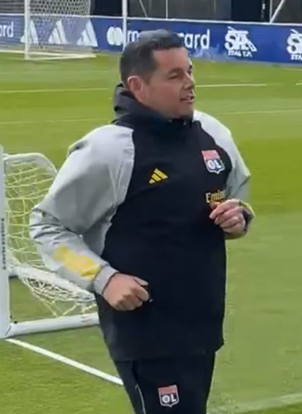

Crystal Palace Sack Pierre Sage After 16 Matches
The Premier League club sit bottom of the table and are in advanced talks with Thomas Frank.

What happened
Crystal Palace dismissed manager Pierre Sage on Thursday, November 12, 2026, after just 16 matches in charge. An 81-word club statement confirmed the departure alongside three members of his coaching staff: Jamal Alioui, Damien Della Santa, and Sandy Guichard. The dismissal follows a 3-1 home defeat to Liverpool on Sunday, which left the Eagles bottom of the Premier League standings. Negotiations regarding compensation for the remainder of Sage's three-year contract delayed the official announcement.
Why it is being talked about

The swift departure marks a dramatic reversal for Sage, who was named French manager of the year last summer after winning the Coupe de France and qualifying for the Champions League with Lens. Palace are already in advanced talks with Thomas Frank to succeed him. Frank has been unemployed since his dismissal by Tottenham in February 2026. Complicating matters further, Sage has emerged as a leading candidate to return to his previous club, Lens, following their dismissal of Yannick Cahuzac on Tuesday, November 10, 2026, which could potentially offset Palace's compensation costs after they paid more than £4m to secure Sage in June.
Key facts and numbers
Palace earned only seven points from their opening 10 Premier League matches under Sage, securing victories solely against Fulham and Nottingham Forest. The team holds the worst defensive record in the division, conceding 24 goals, and sits 21st in the 36-team Europa League table. Sage's tenure was also impacted by squad departures, including the summer exits of Maxence Lacroix and Daniel Munoz, alongside January's departure of Marc Guéhi to Manchester City. Palace were the lowest spenders in the Premier League during the summer transfer window.
What happens next
Palace hope to install Thomas Frank before their fixture against Coventry on Saturday, November 21, 2026. Alternatives previously considered by the club included Sean Dyche and Vítor Pereira. Meanwhile, Palace stated that an update on the permanent managerial appointment will be provided in due course.